01
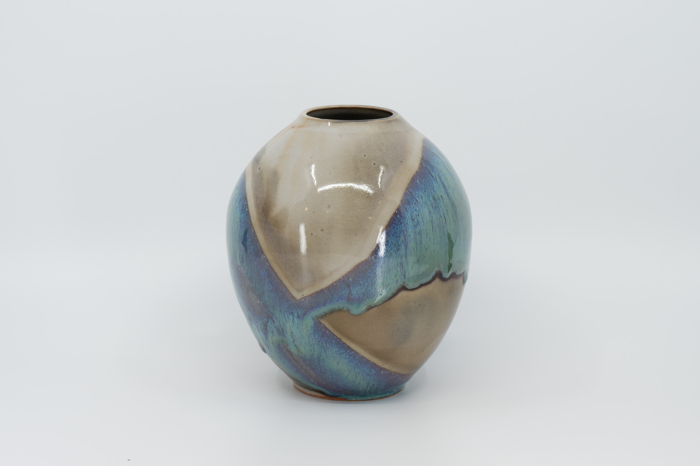
Geode Sphere
Crystalline facets break across the surface — cream against ribbons of teal, periwinkle, and aubergine.
A small body of wheel-thrown and hand-built work by Lily — vessels, bowls, and one-of-a-kind pieces in stoneware and porcelain.
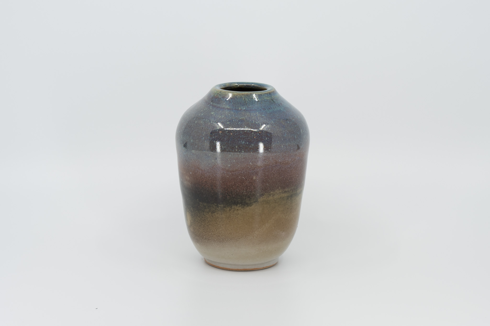
Drawn from the studio shelf — small editions and singular pieces, photographed in natural light. Move sideways to walk the row.

Crystalline facets break across the surface — cream against ribbons of teal, periwinkle, and aubergine.
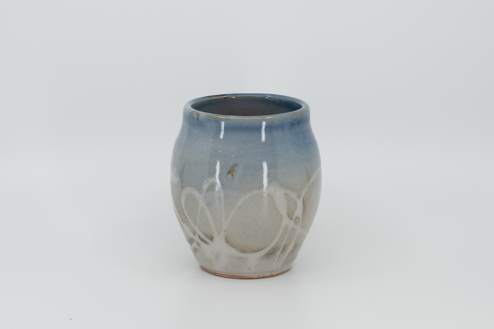
Powder blue over oatmeal, with white slip-trailed loops at the foot.
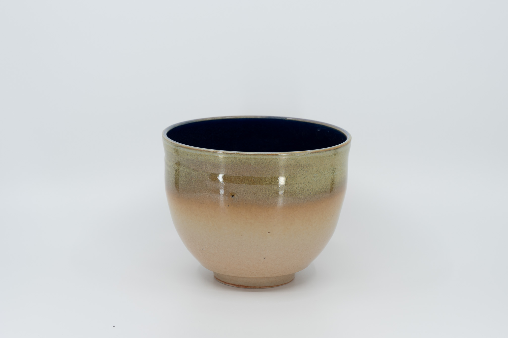
Olive and peach outside; a deep navy pool within.
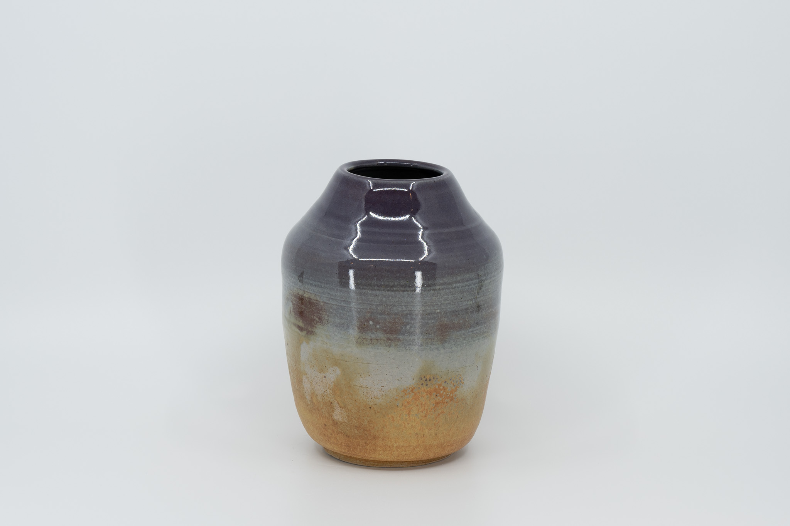
A glossy aubergine shoulder settling into raw honey-buff stoneware.
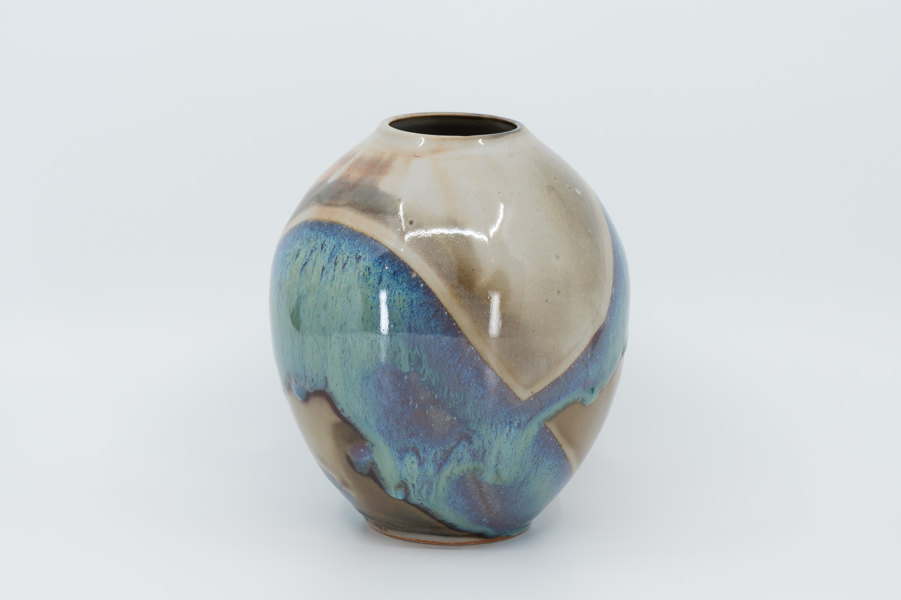
A small sphere — ribbons of teal and copper cutting across a cream cap.
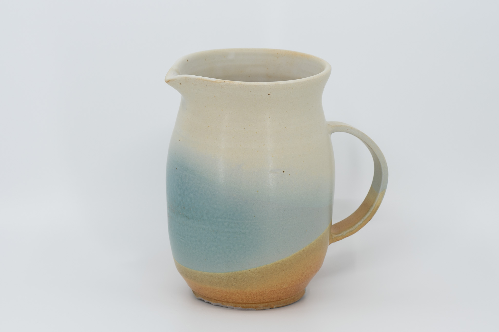
Cream above, a soft blue band, the foot left bare.
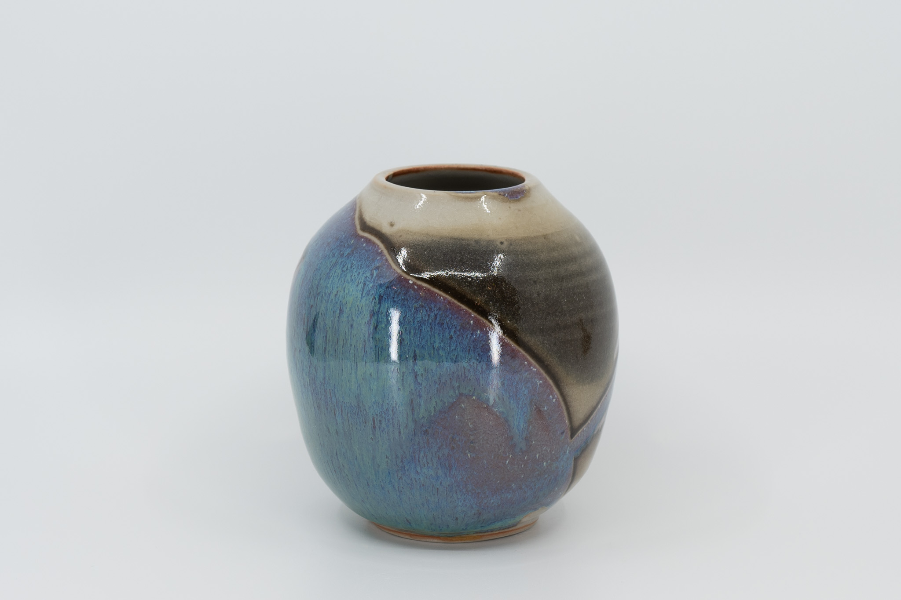
Teal and lilac drift across the shoulder of a round, full-bellied vase.
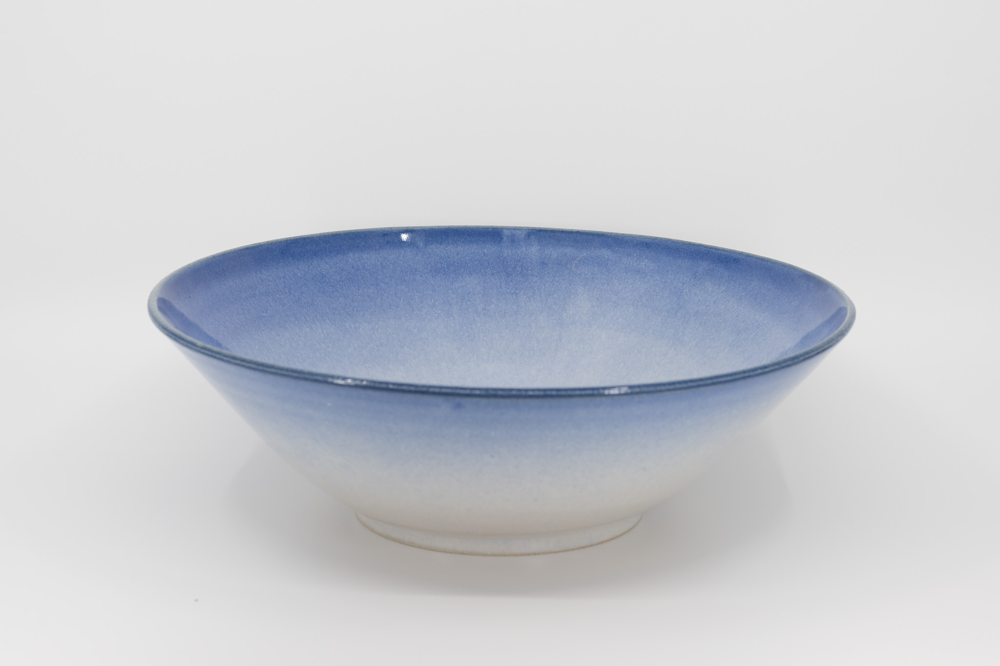
A wide, open form — glaze deepening from a soft rim to a saturated base.
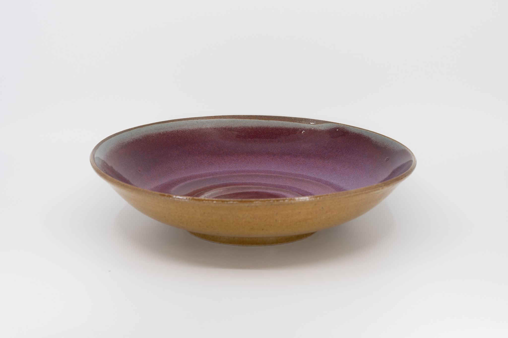
A raspberry pool held inside a sand-glazed rim, throwing rings still visible.
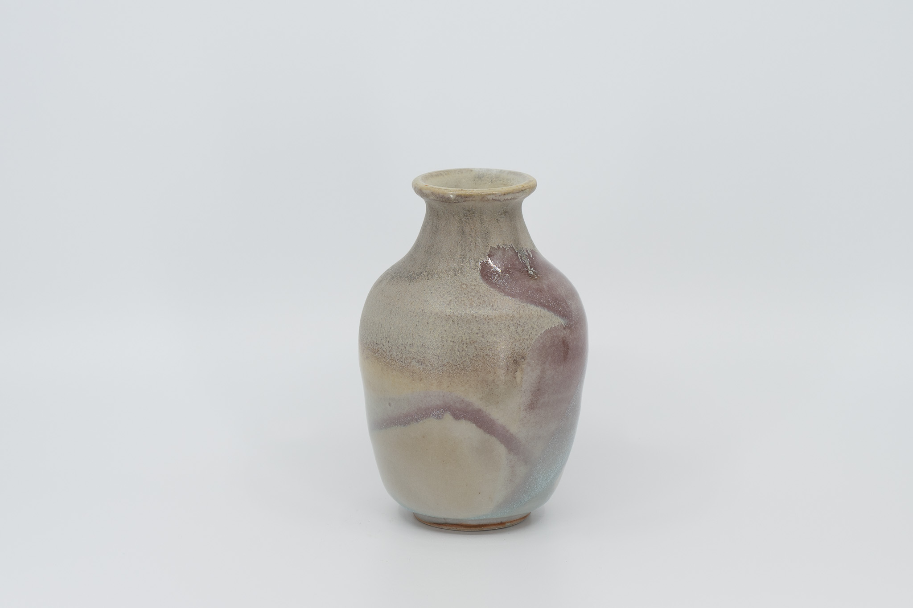
Soft mauve ribbons against a quiet cream body, the lip flared just slightly.
Pieces are available by inquiry. New work added each season.
Lily's work begins on the wheel, but it doesn't always end there. Each piece passes through her hands many times — thrown, trimmed, dried, glazed, fired — over the course of weeks.
The studio is small. Editions are smaller. Most pieces are one-of-a-kind, made in a quiet corner of the house with the door open to the garden. She works in stoneware and porcelain, with a palette of glazes mixed by hand and refined over many firings.
The aim is not perfection. The aim is to make objects that feel honest in the hand — vessels you reach for in the morning, bowls you set down on the table without thinking. Quiet things, made slowly.